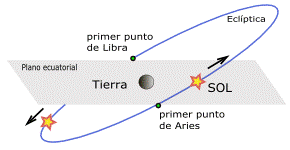

Examina y analiza los pro y los contra en tu balanza que te han de beneficiar para tu completo equilibrio, en ti encontrarás lo que te dará seguridad en lo que elijas, sólo tu eres responsable de tus decisiones, aprende a elegir, te dará la victoria.
LIBRA, SEPTIMO SIGNO DEL ZODÍACO O CONSTELACIÓN DE LIBRA, sugiere, analizar lo que está a tu favor o en contra, tu eliges, eres libre de hacerlo en todas tus decisiones, y no culpes a otros, sigue tu instinto, valora todos tus días.

Es el Equinoccio Otoñal, o sea la declinación del Sol y el Ecuador Celeste coinciden, es la “noche Igual” porque la Eclíptica la corta. La noche y el día tienen la misma duración en todo el mundo, comienza al norte el Otoño. Es el primer punto de Libra: el Sol aparenta pasar de Norte a Sur del ecuador celeste, y su declinación pasa de positiva a negativa. Actualmente ninguno de los equinoccios se encuentra en la Constelación que los nombra, debido a la precesión: el primer punto de Aries está en Piscis, y el primer punto de Libra se halla en Virgo).
{kind=link}